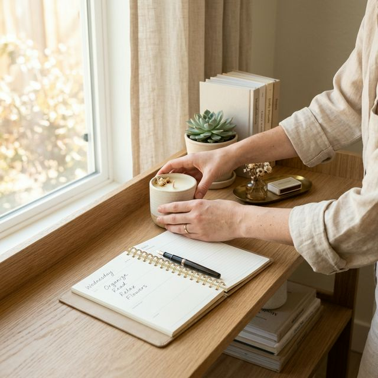

Post-Recovery Habit Stacking

Maintaining a recovered home is a skill, not a personality trait. Discover how 'habit stacking' can protect your space from clutter returning.
One of the largest fears after a major decluttering project is: "Will it stay this way?" The truth is that a home is a living, breathing space. Clutter will inevitably try to re-enter. The key to long-term success is not a weekly deep clean, but rather dozens of tiny, almost automatic habits that happen throughout the day. This is where Habit Stacking comes in—the science of attaching a new routine to an existing one.
The Science of Seamless Change
Instead of trying to 'remember' to tidy, you anchor a task to something you already do. For example, "After I pour my morning coffee (existing habit), I will clear the kitchen counter (new habit)." By piggybacking off of neurons that are already wired, you bypass the friction of starting a new task. This transforms tidying from a "project" into an automatic part of your lifestyle.
"The goal of recovery isn't to be a person who is always cleaning; it's to be a person who lives in an automatic state of maintenance."
The Habit Stacking Framework
Create your own roadmap for success with these common anchors:
- Morning Coffee Anchor: Spend 2 minutes clearing any items from the previous evening's relaxation area.
- Arriving Home Anchor: Spend 1 minute putting shoes in their designated basket immediately—a critical step in 'Stopping the Bleed'.
- Dinner Preparation Anchor: Clean as you go. Never leave a kitchen counter cluttered after a meal is served.
- Phone Charging Anchor: Plug in your phone for the night and take 3 minutes to return any stray items in the bedroom to their proper homes.
Maintenance doesn't require massive effort; it requires consistency. By stacking these micro-habits, you're building an invisible safety net that keeps your home in a perpetual state of calm. Remember, you're building a system, not a chore list.